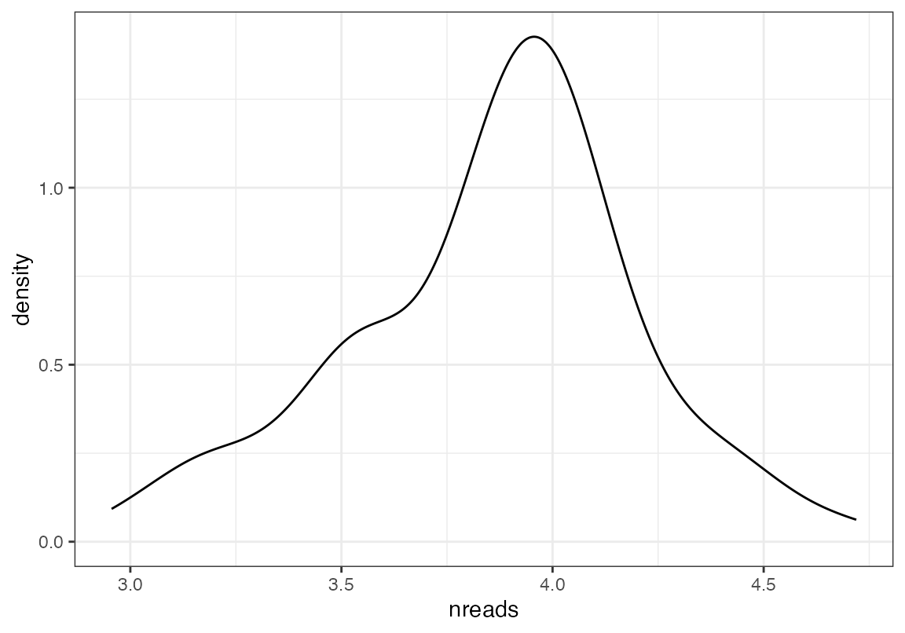

How to use mergebamsR
2024-05-16
HowTo.RmdInstalling Rust
First you need to have an updated Rust installation. Go to this site to learn how to install Rust.
Installing mergebamsR
You will need to have the devtools package installed…
devtools::install_github("furlan-lab/mergebamsR")Running mergebamsR
Loading libraries
rm(list=ls())
suppressPackageStartupMessages({
library(mergebamsR)
})
outpath<-"/tmp"
root<-file.path(.libPaths()[1], "mergebamsR/extdata/test")Simple merging of two bams located in test folder
These two bam files are located in the test directory of this repository. To create a merge of the two bam files in the test/out folder, run the following.
Prepending cell barcodes (CB)
When merging bams from single cell data, it may be advantageous to include additional information in the cell barcode tag that reflects the merge. In this case we are merging the two bam files but prepending the cell barcodes with the prefixes “test_1_” for the first file and “test_2_” for the second file. The prefixes parameter must contain a character vector of prefixes of equal length to the character vector of the bams argument.
Filtering
Finally, it may also be useful to filter bam files to include only specific reads. mergebamsR provides this feature. By supplying a list of character vectors containing read names to be kept, one can filter the output bam to only have reads of interest. Again, the list length needs to be the same length as the bams character vector input.
mergebams(bams = c(file.path(root, "bam1.bam"), file.path(root, "bam2.bam")),
out_path = outpath,
prefixes = c("test1_","test2_"),
names = list(c("VH00738:4:AAAW2TWHV:1:2512:20125:30230", "VH00738:4:AAAW2TWHV:1:1612:47827:5146"),
c("VH00738:4:AAAW2TWHV:2:2114:49683:55957", "VH00738:4:AAAW2TWHV:2:1203:65210:13741")))For situations in which only certain bam files are to be filtered, include a NULL in the list for those files that are not meant to be filtered. In the below, we filter two reads from bam1.bam and retain all reads from bam2.bam.
Subset individual BAM files
First, to peek at a few of the cellbarcodes:
## [1] "ATTGGACAGTCATGCT-1" "TTTACTGAGTCGATAA-1" "ATCATGGCAGACGCTC-1"
## [4] "CACTCCATCTCGCTTG-1" "GCTGCGAGTCCGTCAG-1" "CTCTACGGTCCAGTAT-1"
## [7] "TAGTTGGGTTCAGACT-1" "CAGTCCTAGCAATATG-1" "CGACCTTTCCACGTGG-1"
## [10] "GGAAAGCTCTCAACTT-1" "GGACATTCAGCAGTTT-1" "GACGCGTCATCTCGCT-1"
## [13] "TCGGGACGTGCTCTTC-1" "GTTCATTTCGAATCCA-1" "GTGCAGCGTACACCGC-1"
## [16] "CAGTCCTTCACGGTTA-1" "GAGCAGACAGACAGGT-1" "ATGTGTGCACATGTGT-1"
## [19] "TCATTACTCGGAAACG-1" "TGCGTGGAGCCATCGC-1" "GTCTCGTCACCTATCC-1"
## [22] "CATTATCCATTGTGCA-1" "AAGTCTGCACAGGAGT-1" "GACCAATGTCCTCTTG-1"
## [25] "TCACAAGGTGACTACT-1" "GCGAGAACAACACGCC-1" "GTAACGTCAAAGAATC-1"
## [28] "AGATCTGTCATCACCC-1" "TACGGTAGTAGCTCCG-1" "TGAGCCGCACGAGGTA-1"
## [31] "CGTCACTTCACCACCT-1" "CTCACACTCTAACTCT-1" "CACAAACTCACATACG-1"
## [34] "CGACTTCCATTTCAGG-1" "TACTTACTCGGAATCT-1" "ACTTTCATCCCAACGG-1"
## [37] "GATGAAAGTCAGAGGT-1" "AGTGTCAGTCTCTCTG-1" "CGGAGTCTCAGCTCTC-1"
## [40] "ATAGACCAGTCCATAC-1" "CGAGCCACAAGAAGAG-1" "CAGGTGCCAATAGCGG-1"
## [43] "AATCGGTCAGATGGCA-1" "AATCCAGAGATCGGGT-1" "ACTTACTGTGTTTGGT-1"
## [46] "GGGCACTCATAAGACA-1" "CTGTGCTCAAGAGGCT-1" "GCGCCAAAGGAGCGTT-1"
## [49] "CCTAAAGCAAGTCTGT-1" "GGGACCTCAGACTCGC-1" "GTAGTCACATGGTTGT-1"
## [52] "AATCCAGTCAGTTAGC-1" "AACTGGTGTTGCGCAC-1" "TGACAACTCTAACTGG-1"
## [55] "AACTCTTGTTGTTTGG-1" "GACCAATGTACGACCC-1" "AAAGTAGGTCCGAAGA-1"
## [58] "AGTGGGAAGAGCCCAA-1" "GACGTTATCGTTTAGG-1" "TAAGAGACAAGCGAGT-1"
## [61] "TAAACCGCAAGCGATG-1" "CCGGTAGGTGCGGTAA-1" "CACCAGGTCTGTGCAA-1"
## [64] "GAACATCCAGTAAGCG-1" "CGACCTTTCATTTGGG-1" "AGTGAGGAGAGAGCTC-1"
## [67] "ACTATCTGTGATGTCT-1" "TCGAGGCCAGATGGCA-1" "CCATGTCGTCAGGACA-1"
## [70] "CCGTGGAAGACTTGAA-1" "ACTTTCAGTATAGTAG-1" "GCATACATCGGTGTCG-1"
## [73] "GAACCTACAGATCTGT-1" "TGGTTAGCACACTGCG-1" "AGGGTGATCTGTGCAA-1"
## [76] "GTATCTTCACTCGACG-1" "TCATTACTCATCGATG-1" "CATCAGACAACACCCG-1"
## [79] "CGAACATCACCTCGGA-1" "GTGCGGTGTAAATGTG-1" "GCAGCCATCTATCGCC-1"
## [82] "TACGGATGTCACAAGG-1" "TTCGGTCGTCAACTGT-1" "CAAGTTGCAGGATTGG-1"
## [85] "CGCTGGAAGATATGCA-1" "GGAACTTAGTTGCAGG-1" "CGATGGCAGGTGCTTT-1"
## [88] "ACCCACTTCTCCAACC-1" "GATCGATGTCTAGGTT-1" "GGTGCGTTCAGGCAAG-1"
## [91] "ACAGCTACAGGGTACA-1" "CGTCTACTCGAGAACG-1" "CAGCTGGTCGAACTGT-1"
## [94] "TGATTTCTCTTACCTA-1" "TGGACGCTCACTTCAT-1" "ACGCAGCGTTACGGAG-1"
## [97] "TCTGAGATCCCTAATT-1" "ACTGAACGTTATTCTC-1" "ACTGATGTCGTGGTCG-1"
## [100] "AACCATGGTCTTGTCC-1"To peek at a few read names:
## [1] "VH00738:4:AAAW2TWHV:2:2504:18932:30136"
## [2] "VH00738:4:AAAW2TWHV:1:2502:17909:53799"
## [3] "VH00738:4:AAAW2TWHV:1:2214:43700:49596"
## [4] "VH00738:4:AAAW2TWHV:1:1406:34876:36458"
## [5] "VH00738:4:AAAW2TWHV:1:2312:17947:48309"
## [6] "VH00738:4:AAAW2TWHV:2:1402:49001:4351"
## [7] "VH00738:4:AAAW2TWHV:2:1608:74545:12321"
## [8] "VH00738:4:AAAW2TWHV:1:1403:61802:38768"
## [9] "VH00738:4:AAAW2TWHV:1:1111:37867:13665"
## [10] "VH00738:4:AAAW2TWHV:1:2209:37489:53988"
## [11] "VH00738:4:AAAW2TWHV:1:1502:46294:18645"
## [12] "VH00738:4:AAAW2TWHV:2:2206:44154:54253"
## [13] "VH00738:4:AAAW2TWHV:2:1208:29157:43993"
## [14] "VH00738:4:AAAW2TWHV:2:1303:46559:52758"
## [15] "VH00738:4:AAAW2TWHV:1:1405:75587:36118"
## [16] "VH00738:4:AAAW2TWHV:2:2609:50516:26728"
## [17] "VH00738:4:AAAW2TWHV:2:1506:70474:12378"
## [18] "VH00738:4:AAAW2TWHV:2:2303:58772:43804"
## [19] "VH00738:4:AAAW2TWHV:2:1203:67104:10220"
## [20] "VH00738:4:AAAW2TWHV:1:2201:52050:38295"
## [21] "VH00738:4:AAAW2TWHV:1:1506:53603:31518"
## [22] "VH00738:4:AAAW2TWHV:2:2402:50554:21390"
## [23] "VH00738:4:AAAW2TWHV:1:1301:33550:29075"
## [24] "VH00738:4:AAAW2TWHV:1:2609:37716:55616"
## [25] "VH00738:4:AAAW2TWHV:2:1303:35595:8137"
## [26] "VH00738:4:AAAW2TWHV:2:1613:59359:28261"
## [27] "VH00738:4:AAAW2TWHV:1:1312:47979:46037"
## [28] "VH00738:4:AAAW2TWHV:2:1303:30615:55635"
## [29] "VH00738:4:AAAW2TWHV:2:2314:61366:50600"
## [30] "VH00738:4:AAAW2TWHV:1:1504:28835:7778"
## [31] "VH00738:4:AAAW2TWHV:2:1502:70342:49426"
## [32] "VH00738:4:AAAW2TWHV:1:2206:52448:17111"
## [33] "VH00738:4:AAAW2TWHV:1:2109:63506:3291"
## [34] "VH00738:4:AAAW2TWHV:1:1211:46653:36118"
## [35] "VH00738:4:AAAW2TWHV:2:1512:65721:47192"
## [36] "VH00738:4:AAAW2TWHV:1:2213:63468:10220"
## [37] "VH00738:4:AAAW2TWHV:1:1311:42090:29624"
## [38] "VH00738:4:AAAW2TWHV:2:2410:7911:15975"
## [39] "VH00738:4:AAAW2TWHV:2:2604:47562:52852"
## [40] "VH00738:4:AAAW2TWHV:2:1602:13270:43444"
## [41] "VH00738:4:AAAW2TWHV:1:1108:61707:44088"
## [42] "VH00738:4:AAAW2TWHV:1:1607:75303:26861"
## [43] "VH00738:4:AAAW2TWHV:2:2311:42828:36989"
## [44] "VH00738:4:AAAW2TWHV:1:1101:16660:42289"
## [45] "VH00738:4:AAAW2TWHV:1:2303:61007:15483"
## [46] "VH00738:4:AAAW2TWHV:1:1403:40310:24437"
## [47] "VH00738:4:AAAW2TWHV:2:1503:71913:41910"
## [48] "VH00738:4:AAAW2TWHV:2:1603:29839:16354"
## [49] "VH00738:4:AAAW2TWHV:2:1109:43321:20367"
## [50] "VH00738:4:AAAW2TWHV:1:2306:34308:33884"
## [51] "VH00738:4:AAAW2TWHV:1:1211:52467:12018"
## [52] "VH00738:4:AAAW2TWHV:2:2303:60003:40794"
## [53] "VH00738:4:AAAW2TWHV:2:2514:20977:55616"
## [54] "VH00738:4:AAAW2TWHV:2:1104:41617:3745"
## [55] "VH00738:4:AAAW2TWHV:2:1608:25351:30344"
## [56] "VH00738:4:AAAW2TWHV:2:1609:31524:2022"
## [57] "VH00738:4:AAAW2TWHV:2:1607:38246:28697"
## [58] "VH00738:4:AAAW2TWHV:1:2213:43131:53837"
## [59] "VH00738:4:AAAW2TWHV:2:2406:38682:42194"
## [60] "VH00738:4:AAAW2TWHV:2:1503:8006:19326"
## [61] "VH00738:4:AAAW2TWHV:2:1213:17455:24229"
## [62] "VH00738:4:AAAW2TWHV:1:1214:47771:26898"
## [63] "VH00738:4:AAAW2TWHV:2:2310:16811:35058"
## [64] "VH00738:4:AAAW2TWHV:1:1504:20636:37064"
## [65] "VH00738:4:AAAW2TWHV:1:2303:51955:9993"
## [66] "VH00738:4:AAAW2TWHV:2:2210:55742:18891"
## [67] "VH00738:4:AAAW2TWHV:2:2112:34838:47817"
## [68] "VH00738:4:AAAW2TWHV:2:2309:17663:55257"
## [69] "VH00738:4:AAAW2TWHV:2:1514:50895:29871"
## [70] "VH00738:4:AAAW2TWHV:1:1110:16792:32767"
## [71] "VH00738:4:AAAW2TWHV:2:2212:75284:40358"
## [72] "VH00738:4:AAAW2TWHV:1:1303:28229:47457"
## [73] "VH00738:4:AAAW2TWHV:2:1602:56595:25498"
## [74] "VH00738:4:AAAW2TWHV:1:1104:47051:5657"
## [75] "VH00738:4:AAAW2TWHV:1:1104:39723:40055"
## [76] "VH00738:4:AAAW2TWHV:2:2210:22340:50959"
## [77] "VH00738:4:AAAW2TWHV:1:2310:64623:22128"
## [78] "VH00738:4:AAAW2TWHV:2:1410:63885:44371"
## [79] "VH00738:4:AAAW2TWHV:2:2508:10222:40245"
## [80] "VH00738:4:AAAW2TWHV:1:1107:11396:21049"
## [81] "VH00738:4:AAAW2TWHV:2:2104:33929:30438"
## [82] "VH00738:4:AAAW2TWHV:1:1407:53849:20405"
## [83] "VH00738:4:AAAW2TWHV:2:2506:28532:11072"
## [84] "VH00738:4:AAAW2TWHV:2:1207:67918:33865"
## [85] "VH00738:4:AAAW2TWHV:2:2302:60268:52001"
## [86] "VH00738:4:AAAW2TWHV:1:1504:28930:19231"
## [87] "VH00738:4:AAAW2TWHV:1:1109:41219:20841"
## [88] "VH00738:4:AAAW2TWHV:1:1402:37792:8440"
## [89] "VH00738:4:AAAW2TWHV:1:1611:53300:38938"
## [90] "VH00738:4:AAAW2TWHV:1:1413:56367:23226"
## [91] "VH00738:4:AAAW2TWHV:2:2608:16054:45659"
## [92] "VH00738:4:AAAW2TWHV:1:2101:27869:14082"
## [93] "VH00738:4:AAAW2TWHV:2:1201:45366:7229"
## [94] "VH00738:4:AAAW2TWHV:1:2601:24726:21920"
## [95] "VH00738:4:AAAW2TWHV:1:2111:57144:6812"
## [96] "VH00738:4:AAAW2TWHV:1:2510:19367:22923"
## [97] "VH00738:4:AAAW2TWHV:2:1406:74034:24154"
## [98] "VH00738:4:AAAW2TWHV:1:1401:44192:48271"
## [99] "VH00738:4:AAAW2TWHV:2:2105:13819:36875"
## [100] "VH00738:4:AAAW2TWHV:1:2202:61612:2685"Although other tools already exist for subsetting bam files using shell scripting, it may be helpful to subset BAM files by name or a BAM tag using an R interface such that single-cell toolkits such as Seurat, Monocle, or SCE can be run-adjacent. mergebamsR provides this usability. Currently only one bam file is supported as input. The number of each elements of the following should all be the same: 1. the list “features” which specifies desired features to be captured in each output file (current features supported are read names and tags such as “CB”) 2. a vector of file output names
Note that multithreading has been implemented to split work byt the number of outputbam files created. Therefore, for example, you should use 2 cores if creating two bam files.
TAG is the name of the BAM Tag to subset by. The default is “CB”.
subsetbam(inputbam = file.path(root, "bam1.bam"), outputbams = "/tmp/test.bam", features = list(c("ATTGGACAGTCATGCT-1", "TTTACTGAGTCGATAA-1")), cores=1)
file.remove("/tmp/test.bam")## [1] TRUEOne can optionally dump all the reads that aren’t subsetted into a separate file as such:
subsetbam(inputbam = file.path(root, "bam1.bam"), outputbams = "/tmp/test.bam", features = list(c("ATTGGACAGTCATGCT-1", "TTTACTGAGTCGATAA-1")), cores=1, dump_bam = "/tmp/dump.bam")
file.remove("/tmp/test.bam")## [1] TRUE
file.remove("/tmp/dump.bam")## [1] TRUEHere’s an example of subsetting by read name, dumping the other reads into a file
subsetbam(inputbam = file.path(root, "bam1.bam"),
outputbams = "/tmp/test.bam",
features = list(peekbam(bam = file.path(root, "bam1.bam"), field = "name", n=100)),
cores=1,
field = "name",
dump_bam = "/tmp/dump.bam")
file.remove("/tmp/test.bam")## [1] TRUE
file.remove("/tmp/dump.bam")## [1] TRUENow we can make two bams at a time
subsetbam(inputbam = file.path(root, "bam1.bam"), outputbams = c("/tmp/test1.bam", "/tmp/test2.bam"), features = list(cbs[1:50], cbs[51:100]), cores=2)
file.remove("/tmp/test1.bam")## [1] TRUE
file.remove("/tmp/test2.bam")## [1] TRUENote you may need to remove the files if they exst
file.remove(list.files("/tmp", full.names = T))## [1] FALSE FALSE FALSE FALSE FALSE FALSE FALSE FALSE TRUE TRUE FALSEworking on larger bam files
Note that this bam file is too big to be included in the test. You will want to use your own First, we determined that there are 1045596 reads total. Second, we can plot the number of reads per barcode Third, we can select only barcodes that have > 10000 reads and less than 60000 and put them into a “middle.bam” and all other reads in the “extremes.bam”
We can potentially speed things up by using cores to write each output bam. An example is shown below. In this case, you don’t want to use more cores than the number of output bams, that would be silly
On the other hand, we have implemented another parallelization method whereby the bam is split across the cores. You can see this is not faster for only a few big output bams. But when lots of little output bams are sought, this is a better approach.
library(ggplot2)
bigbam1<-"/Users/sfurlan/Library/CloudStorage/OneDrive-FredHutchinsonCancerCenter/temp/geno_recipient_HSC.bam"
cbs1<-peekbam(bigbam1, n = 1045596)
dat1<-table(cbs1)
ggplot(data.frame(nreads=log10(as.numeric(dat1))), aes(x=nreads))+geom_density()+theme_bw()
mid<-names(dat1)[dat1>4000 & dat1 < 30000]
ext<-names(dat1)[!(dat1>4000 & dat1 < 30000)]
any(mid %in% ext)## [1] FALSE## [1] FALSE
t1<-system.time(subsetbam(inputbam = bigbam1, outputbams = c("/Users/sfurlan/Desktop/middle.bam", "/Users/sfurlan/Desktop/extremes.bam"), features = list(mid, ext), cores=2))
file.remove(c("/Users/sfurlan/Desktop/middle.bam", "/Users/sfurlan/Desktop/extremes.bam"))## [1] TRUE TRUE
t2<-system.time(subsetbam(inputbam = bigbam1, outputbams = c("/Users/sfurlan/Desktop/middle.bam", "/Users/sfurlan/Desktop/extremes.bam"), features = list(mid, ext), cores=8, split_bam = T))
cb_check<-peekbam("/Users/sfurlan/Desktop/middle.bam", n = 614127)
all(cb_check %in% mid)## [1] TRUE## [1] TRUE
file.remove(c("/Users/sfurlan/Desktop/middle.bam", "/Users/sfurlan/Desktop/extremes.bam"))## [1] TRUE TRUE
t1## user system elapsed
## 2.865 0.035 8.209
t2## user system elapsed
## 20.127 0.248 12.044## [1] 21
outputnames<-file.path("/Users/sfurlan/Desktop", paste0(seq(1, length(tags_little_but_many)), "_little.bam"))
t1<-system.time(subsetbam(inputbam = bigbam1, outputbams = outputnames, features = tags_little_but_many, cores=8))
file.remove(outputnames)## [1] TRUE TRUE TRUE TRUE TRUE TRUE TRUE TRUE TRUE TRUE TRUE TRUE TRUE TRUE TRUE
## [16] TRUE TRUE TRUE TRUE TRUE TRUE
t2<-system.time(subsetbam(inputbam = bigbam1, outputbams = outputnames, features = tags_little_but_many, split_bam = T, cores=8))
file.remove(outputnames)## [1] TRUE TRUE TRUE TRUE TRUE TRUE TRUE TRUE TRUE TRUE TRUE TRUE TRUE TRUE TRUE
## [16] TRUE TRUE TRUE TRUE TRUE TRUE
t1## user system elapsed
## 193.738 2.424 43.369
t2## user system elapsed
## 21.841 0.543 19.344Appendix
## R version 4.3.2 (2023-10-31)
## Platform: aarch64-apple-darwin20 (64-bit)
## Running under: macOS Ventura 13.5.2
##
## Matrix products: default
## BLAS: /Library/Frameworks/R.framework/Versions/4.3-arm64/Resources/lib/libRblas.0.dylib
## LAPACK: /Library/Frameworks/R.framework/Versions/4.3-arm64/Resources/lib/libRlapack.dylib; LAPACK version 3.11.0
##
## locale:
## [1] en_US.UTF-8/en_US.UTF-8/en_US.UTF-8/C/en_US.UTF-8/en_US.UTF-8
##
## time zone: America/Los_Angeles
## tzcode source: internal
##
## attached base packages:
## [1] stats graphics grDevices utils datasets methods base
##
## other attached packages:
## [1] ggplot2_3.5.0 mergebamsR_0.0.5
##
## loaded via a namespace (and not attached):
## [1] gtable_0.3.4 jsonlite_1.8.8 highr_0.10 dplyr_1.1.4
## [5] compiler_4.3.2 tidyselect_1.2.0 stringr_1.5.1 parallel_4.3.2
## [9] jquerylib_0.1.4 systemfonts_1.0.5 scales_1.3.0 textshaping_0.3.7
## [13] yaml_2.3.8 fastmap_1.1.1 pbmcapply_1.5.1 R6_2.5.1
## [17] labeling_0.4.3 generics_0.1.3 knitr_1.45 tibble_3.2.1
## [21] desc_1.4.3 munsell_0.5.0 bslib_0.6.1 pillar_1.9.0
## [25] rlang_1.1.3 utf8_1.2.4 cachem_1.0.8 stringi_1.8.3
## [29] xfun_0.42 fs_1.6.3 sass_0.4.8 memoise_2.0.1
## [33] cli_3.6.2 withr_3.0.0 pkgdown_2.0.7 magrittr_2.0.3
## [37] digest_0.6.34 grid_4.3.2 rstudioapi_0.15.0 lifecycle_1.0.4
## [41] vctrs_0.6.5 evaluate_0.23 glue_1.7.0 farver_2.1.1
## [45] ragg_1.2.7 fansi_1.0.6 colorspace_2.1-0 rmarkdown_2.25
## [49] purrr_1.0.2 pkgconfig_2.0.3 tools_4.3.2 htmltools_0.5.7